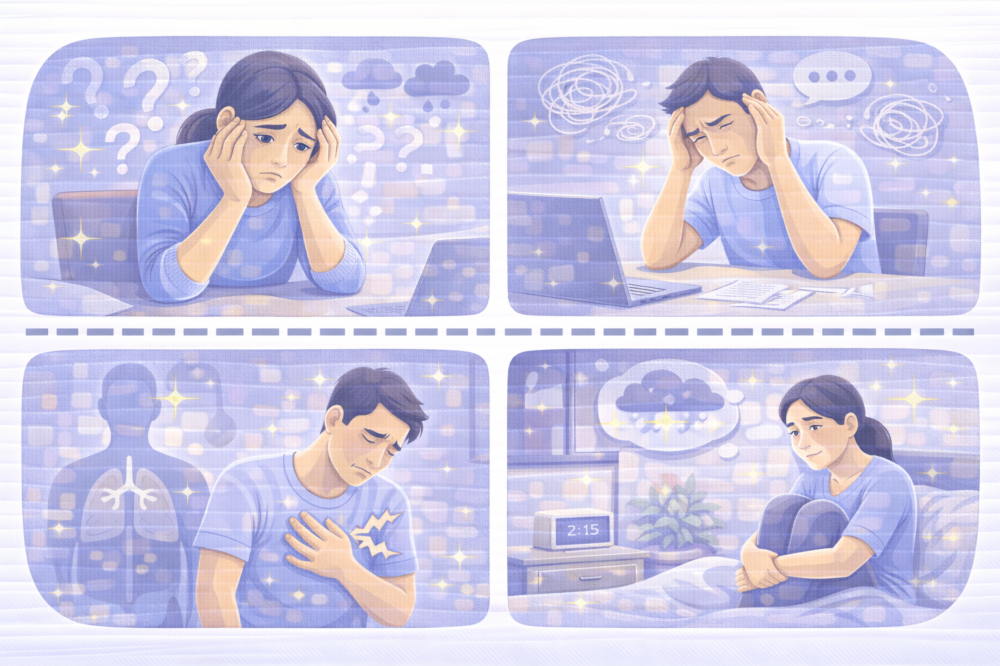
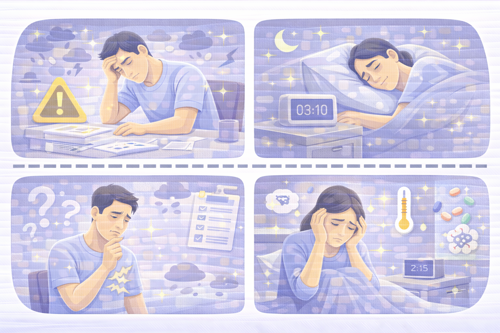
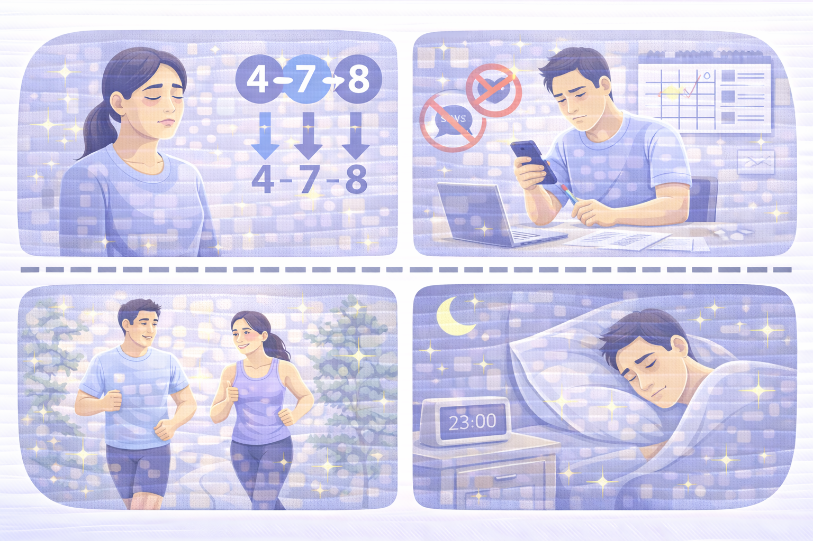
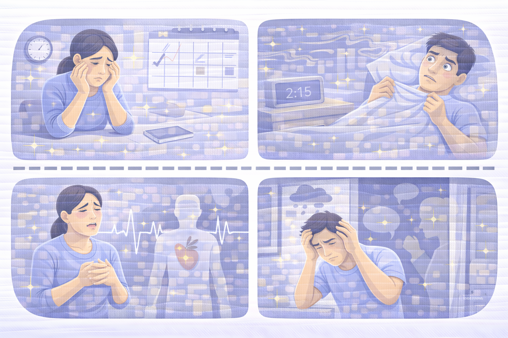

Тривожність
Що таке тривожність, як її розпізнати та які прості техніки допомагають зменшити напругу.

Ознаки тривожності
Тривожність — це не просто нервовість. Це постійний стан внутрішньої напруги, який може проявлятися фізично та емоційно.
- Постійне хвилювання без конкретної причини.
- Важко зупинити думки або «переключитись».
- Напруга в тілі, стискання в грудях.
- Порушення сну.
- Відчуття, що «щось погане станеться».

Чому виникає тривожність
У більшості випадків тривожність — це не «характер», а реакція мозку на перевантаження.
- Хронічний стрес.
- Недостатній сон.
- Невизначеність у житті або роботі.
- Інформаційне перевантаження.
- Проблеми зі здоров’ям або гормональний дисбаланс.

Як зменшити тривожність
Тривожність можна контролювати за допомогою простих технік, які працюють щодня.
- Дихання 4–7–8 (повільний вдих — затримка — видих).
- Обмежити новини та соціальні мережі.
- Планувати день і розбивати задачі на маленькі кроки.
- Прогулянки або легка фізична активність.
- Режим сну та відпочинку.

Коли звертатися по допомогу
Нормально звертатися до спеціаліста, якщо тривога заважає жити повноцінно.
- Тривожність триває більше місяця.
- Порушує сон або продуктивність.
- Виникають панічні атаки.
- З’являються нав’язливі думки.
- Страх виходити з дому або спілкуватися.